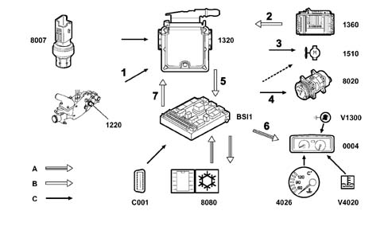
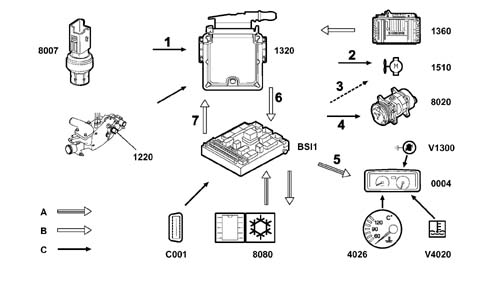

ENGINE MANAGEMENT NODE NCM
- Path
- Descriptions > 10 ENGINE > 1060 DIESEL INJECTION SYSTEM > 1060G DIESEL INJECTION PRESSURE PUMP ELECTRONIC CONTROL > ENGINE MANAGEMENT NODE NCM
- Kind
- system description
- Applies to
- engines: 2.0 16V JTD, 2.2 16V JTD; all production periods
- Interactive page
- https://sloeber94.github.io/elrnDB-fUlss/en/#/179006610
Applies to: engines: 2.0 16V JTD, 2.2 16V JTD; all production periods
The Engine Management Node NCM (1320) for the injection system is fitted in the engine compartment by the left wheel arch.
The NCM is the flash EPROM type, i.e. it can be reprogrammed from the outside using diagnostic equipment without any operations to the hardware and incorporates the absolute atmospheric pressure sensor.
DESCRIPTION
The NCM manages the injection system assembly including:
- the operation of checking the injection and pollutant emissions;
- the driving comfort strategies;
- the anti-starting function;
- the emergency strategies;
- the operation of the fans and the warning lights (*);
- the control of the water heating systems (*);
- the fault diagnosis and memorizing of faults;
- the speed regulation function (*);
- the dialogue with the collection of multiplex network nodes (*)
The NCM guarantees the electronic control of the following elements:
- injectors;
- turbo pressure regulation solenoid;
- fuel high pressure regulator;
- EGR exhaust gas recirculation regulation valve;
- EGR valve casing solenoid valve;
- pre and post-heating control unit (post-heating interruption);
- device for excluding fuel pressure pump 3rd cylinder;
- swirl actuator solenoid valve.
- refrigeration interruption.
- additional heater activation (*).
The NCM also supplies the following information:
- engine speed: to the on-board computer.
- instant consumption: to the on-board computer.
PIN OUT
1, +12 volt power supply (twin relay) (BSM) | 45, Engine coolant temperature sensor earth |
2, OUT signal for injector for cyl. 1 | 46, Engine coolant temperature sensor IN signal |
3, OUT signal for injector for cyl. 3 | 47, N. C. |
4, OUT signal for injector for cyl. 4 | 48, Brake light switch |
5, OUT signal for injector for cyl. 2 | 49, Earth |
6, OUT signal for injector for cyl. 2 | 50, N. C. |
7, N. C. | 51, Earth |
8, Fan relay feed diagnostic line | 52, Recirculation solenoid valve (EGR) OUT signal |
9, High CAN line | 53, Earth |
10, N. C. | 54, N. C. |
11, Temperature sensor IN signal | 55, Valve casing solenoid valve (EGR) OUT signal |
12, Timing sensor/differential pressure sensor power supply | 56, N. C. |
13, Air flow meter sensor IN signal | 57, Engine cooling fan (medium speed) OUT signal (*) |
14, Rpm sensor IN signal | 58, Additional heater 1 on control OUT signal 1 |
15, Accelerator pedal sensor IN signal | 59, N. C. |
16, N. C. | 60, High fuel pressure regulator OUT signal |
17, N. C. | 61, N. C. |
18, Timing sensor IN signal | 62, N. C. |
19, N. C. | 63, N. C. |
20, N. C. | 64, N. C. |
21, IN signal: clutch contact | 65, N. C. |
22, Sensor earth | 66, N. C. |
23, N. C. | 67, Pre-heating control unit fault diagnosis IN signal |
24, Swirl solenoid valve OUT signal | 68, Accelerator pedal sensor IN signal |
25, Engine cooling fan 1 (high speed) OUT signal | 69, Engine compartment junction unit post-contact positive (BSM) |
26, Supercharging pressure regulation solenoid valve OUT signal | 70, Exhaust gas temperature sensor (upstream of the catalyzer) IN signal |
27, Intake air pressure sensor earth | 71, Intake air pressure sensor IN signal |
28, Intake air heater valve solenoid valve OUT signal | 72, N. C. |
29, +12 volt power supply (twin relay) (BSM) | 73, Redundant brake contact IN signal |
30, OUT signal for injector for cyl. 1 | 74, Fuel pressure sensor IN signal |
31, OUT signal for injector for cyl. 3 | 75, Air conditioning system pressure switch (threshold 26 bar) |
32, OUT signal for injector for cyl. 4 | 76, N. C. |
33, Earth | 77, N. C. |
34, Sensor earth | 78, N. C. |
35, N. C. | 79, N. C. |
36, Anti-starting system serial line (*) | 80, Device for excluding fuel high pressure pump 3rd cylinder OUT signal |
37, Low CAN line | 81, N. C. |
38, K diagnostic line | 82, N. C. |
39, Fuel temperature sensor IN signal | 83, Engine cooling fan 2 (low speed) OUT signal |
40, Timing sensor earth | 84, N. C. |
41, Rpm sensor IN signal | 85, Additional heater 2 on control OUT signal 2 |
42, Intake air pressure sensor IN signal | 86, Twin relay OUT signal (BSM) |
43, N. C. | 87, Switch IN signal (earthed) |
44, Sensor power supply (5 volt) | 88, Pre-heating control unit OUT signal |
ENGINE COOLING FUNCTION - (Integrated in the NCM)
In addition to the injection, the NCM also controls the engine cooling function by:
- controlling the starting and stopping of the engine cooling fan(s);
- controlling post-ventilation (6 minutes max);
- Controlling the switching on of the engine coolant temperature overheating warning light;
- controlling the engine coolant temperature sensor/sender unit;
- diagnosing the operation of the fan(s);
- acquiring the engine coolant temperature;
- managing problems or faults.
Function summary diagram

A, VAN
B, CAN
1360, NCM - Automatic Transmission (*) | BSl1, Body Computer Node |
V1300, Diagnostic warning light | C001, Centralized diagnostic socket |
1510, Engine cooling fan | 1320, NCM - injection system |
8020, Air conditioning system compressor | 8080, NCM - air conditioning system |
0004, Control panel (temperature gauge + engine coolant temperature overheating warning light) | 8007, Air conditioning system pressure switch |
V4020, Engine coolant overheating warning light | 1220, Engine coolant temperature sensor/sender unit |
4026, Engine coolant temperature gauge |
CONNECTION; SIGNAL; SIGNAL TYPE
Con. | Signal | Signal Type |
|---|---|---|
1 | Engine coolant temperature sensor/sender unit | Continuous signal |
2 | Automatic Transmission fluid temperature cooling request (*) | CAN line |
3 | Engine cooling fan relay control: low speed (1508) | YES / NO |
Engine cooling fan relay control: high speed (1509) | YES / NO | |
4 | Air conditioning system compressor operation | YES / NO |
5 | Engine coolant overheating warning light on request | CAN line |
Engine coolant temperature gauge on request | CAN line | |
Engine coolant overheating warning light flashing request | CAN line | |
Air conditioning system compressor activation control (AC/OUT) | CAN line | |
6 | Diagnostic warning light on request | VAN line |
Engine coolant temperature gauge on request | VAN line | |
Engine coolant temperature warning light flashing request | VAN line | |
7 | Air conditioning system compressor activation authorization request (AC/TH) | CAN line |
POST-VENTILATION
After the engine has been switched off, the NCM controls the engine temperature and, if the coolant exceeds a certain level (*) (105° C) it activates the engine cooling fans.
This post-ventilation takes place at low speed for a maximum of 6 minutes after the engine has been switched off.
FAULT MANAGEMENT
If there are operating problems or faults, in order to safeguard the operation of the power unit, the NCM:
- controls the operation of the fan at high speed.
- controls the flashing of the engine coolant overheating warning light in the instrument panel (*).
- excludes the operation of the air conditioning system compressor (AC/OUT).
AIR CONDITIONING COOLING FUNCTION (Integrated in the NCM)
Injection NCM functions:
Controlling the starting and stopping of the (engine cooling) fan(s).
Acquisition of pressure in air conditioning system refrigeration circuit.
Function summary diagram

A, VAN
B, CAN
1360, NCM - Automatic Transmission (*) | BSl1, Body Computer Node |
V1300, Diagnostic warning light | C001, Centralized diagnostic socket |
1510, Engine cooling fan | 1320, NCM - injection system |
8020, Air conditioning system compressor | 8080, NCM - air conditioning system |
0004, Control panel (temperature gauge + engine coolant temperature overheating warning light) | 8007, Air conditioning system pressure switch |
V4020, Engine coolant overheating warning light | 1220, Engine coolant temperature sensor/sender unit |
4026, Engine coolant temperature gauge |
CONNECTION; SIGNAL; SIGNAL TYPE
Con. | Signal | Signal Type |
|---|---|---|
1 | Air conditioning system pressure switch | Analogue |
2 | Engine cooling fan relay control: low speed (1508) | YES / NO |
Engine cooling fan relay control: high speed (1509) | YES / NO | |
3 | Fan assembly relay feed: medium speed (1514) | YES / NO |
4 | Air conditioning system compressor operation | YES / NO |
5 | Diagnostic warning light on request | VAN line |
6 | Diagnostic warning light on request | CAN line |
Air conditioning system compressor activation control (AC/OUT) | CAN line | |
Air conditioning system pressure switch | CAN line | |
7 | Air conditioning system compressor activation authorization request (AC/TH) | CAN line |
AIR CONDITIONING SYSTEM PRESSURE SWITCH - (8007)
The pressure switch, identified by a black connector, is the piezoelectric type and supplies a voltage proportional to the pressure in the refrigeration circuit.
The electric signal supplied by the sensor is transmitted by wire to the NCM and then sent, via the multiplex network, to the Body Computer Node.
1, Pressure switch
Voltage supplied at a pressure of 1 bar + 0.5 volt
Voltage supplied at a pressure of 31 bar +4.5 volt
DESCRIPTION
The pressure switch, fitted on the air conditioning system condenser, has the task of measuring the pressure in the refrigeration circuit.
Depending on the information received, the NCM:
- authorizes the starting of the fan (for cooling the climate control condenser)
- authorizes the activation of the air conditioning system compressor.
CONDENSER COOLING FUNCTION
The NCM controls the activation of the fan:
- at low speed if the pressure is higher than 10 bar (stopping if the pressure is below 7 bar).
- at high speed if the pressure is higher than 22 bar (stopping if the pressure is below 19 bar).
The Body Computer Node "BSI" controls the activation of the fan:
- at medium speed if the pressure is higher than 17 bar (stopping if the pressure is below 14 bar).
FAULT MANAGEMENT
If there are faults with the pressure switch, the NCM:
- switches on the diagnostic warning light in the instrument panel
- excludes the activation of the air conditioning system compressor.
INTAKE AIR TEMPERATURE SENSOR - (1310)
The intake air temperature sensor is incorporated in the flow meter and has the task of measuring the temperature of the intake air.
DESCRIPTION
Depending on the information received, the NCM:
- regulates the temperature of the intake air (controlling the intake air heater solenoid valve).
FAULT MANAGEMENT
If there are problems or faults with the intake air temperature sensor, the NCM uses a replacement value of 50°C.